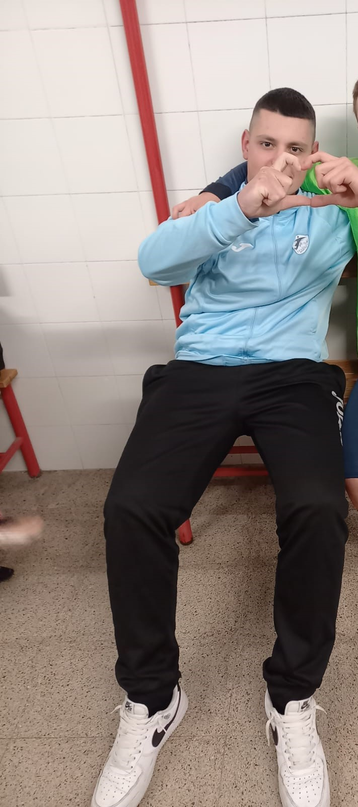

|  |
|
BiografiaMi chiamo Davide Baccellieri. ho 16 anni e vengo da Sannicandro di Bari.
Pratico calcio da quando sono nato e mi picciono molto le moto.
StudiHo cominciato gli studi alla scuola elementare "Don Bosco" di Sannicandro ho proseguito gli anni scolastici alle scuole medie al "Manzoni". Il primo anno di superiori l'ho fatto all'Amaldi(liceo scientifico di Bitetto)
per poi trasfermi alla mia attuale sede ovvero il "Colamonico-Chiarulli".
Conoscenze e competenze Per adesso il mio libro mentale si limita allo studio appreso in questi 2 anni di scuola effetuati al Colamonico-Chiarulli,conosco alla perfezione il linguaggio di progrmazione c++,sò utilizzare qt e github ed infine sto intrappendendo uno studio molto intenso sulla programazione di pagine internet con html!
Conosco alla perfezione l'inglese.
Prospettive e ProgettiNella vita ambisco a fare il calciatore ma se le cose dovessero andare male mi ritroverò sicuramente dietro un computer a programmare un app che sicuramente farà la storia del mondo virtuale.
|
In poche parole In breve mi dovete prendere a lavorare perchè sono il migliore in tutto.
|
|
Contatti Potete contattarmi su instagram, watchapp...insomma dovunque,sono raggiugibile anche al pubblico!
|
|
|